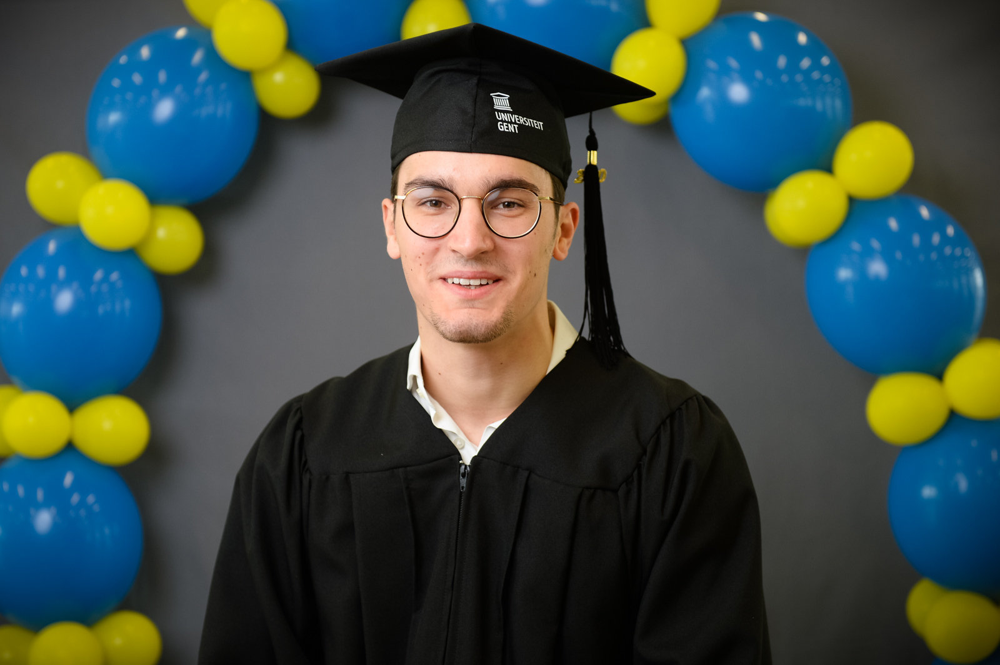

From 2009 to 2015 Olivier studied at Sint-Jozefscollege Aalst and finished with science-mathematics. It was during this period he found his analytical mindset and felt like he should stay true to this. His enthusiasm for mathematics was beyond words and he decided to compete every year in the VWO (Vlaamse Wiskunde Olympiade), always passing to further rounds. He really couldn't let go of unsolved problems.
At Ghent University the freshman opted to go for engineering, purely to develop his mathematical and problem solving mindset further. After one year of very hard work Olivier got an opportunity to go for computer science or physics in his remaining years. Being introduced to Java programming but still having feelings for one of his older courses, Olivier chose for the new and challenging option. In a period of 5 years he went from the very worst IT student in his high-school classroom to a CS engineer cum laude.
